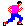
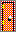

Runner is simple 2D-platformer game from 1993. It was made by a company called SouthBay Software (which may or may not still exist).
Despite being quite simple by today's standards, when I found a copy on an old hard-drive backup, I was thrilled! Unfortunately, the only way to play the game was by running a Windows XP virtual machine and the game controls were significantly worse than I remember, making it very difficult to play. I decided to use this as a challenge and a learning opportunity and try to recreate the game using JavaScript and HTML5 in less than 30 days. This is the result.
I tried to stay as true to the original game as possible, using the same image and audio assets, levels and (to the best of my abilities) AI algorithms.
If you remember this game, I hope it lives up to your memories! And if you happen to be from SouthBay Software, please don't sue me :)
How to Play
You have run out of fuel and are stranded on a strange planet and must negotiate your way through a variety of levels to escape to the planet surface.
The only way to transverse from level to level is to trigger all of the red control lights to a green [ON] condition.
Turning on a control light may gain you a telepod . As you progress in levels the telepods become scarcer.
You must also collect the neutrino fuel canister to escape the level.
The enemy runner,  meanwhile will attempt to thwart your efforts, by turning control lights back off and by trying to catch you.
You may use any telepods you collect to teleport the enemy runner away from you. But, you may only use one telepod at a time. Drop them in the path of the enemy runner and, when he runs into it, he will teleport to another location.
Once you have successfully turned on all of the control lights and collected the neutrino fuel canister , run for the doorway  to escape to the next level.
Additionally, you may encounter four different kinds of marbles while running. Reach them before your opponent does to activate them. Purple marbles will earn back 10% of the time while red marbles will deplete 10% of the time. Light gray marbles will gain you an extra telepod and dark grey marbles will instantly teleport whichever player touches them.
How to Move
Use the arrow keys to control your player. Pressing the space bar will cause him to jump and pressing shift will deploy a telepod.